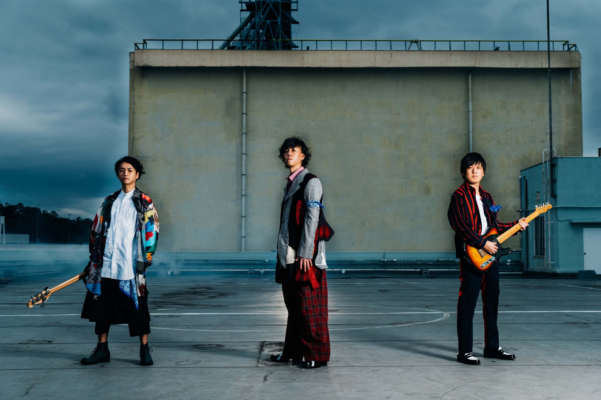

Penjelasan tentang RADWIMPS
Radwimps adalah band rock Jepang yang dibentuk pada tahun 2001 oleh Yojiro Noda bersama teman-teman SMA-nya di Kanagawa. Nama "Radwimps" merupakan kombinasi dari kata "rad" (hebat) dan "wimps" (pengecut), mencerminkan dualitas dalam musik dan lirik mereka. Anggota band terdiri dari Yojiro Noda (vokalis dan gitaris), Akira Kuwahara (gitaris utama), Yusuke Takeda (bassis), dan Satoshi Yamaguchi (drummer hingga 2015).
RADWIMPS - Sparkle
00:00
03:01
Salah satu lagu RADWIMPS yang terkenal adalah sparkle
Lagu ini digunakan untuk soundtrack film Kimi No Nawa/Your Name pada tahun 2016

Ini merupakan foto para pemain bandnya